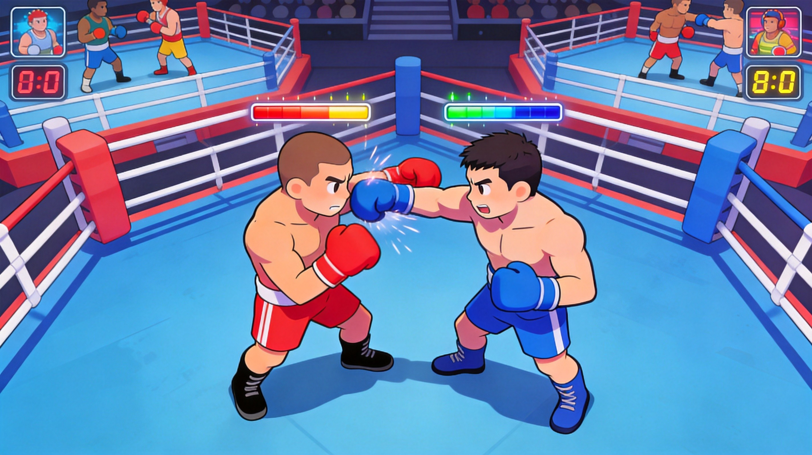
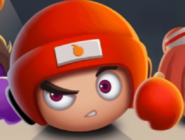
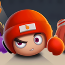

Introduction
Boxer.io is a fast‑paced multiplayer boxing game where stick‑style fighters clash in a vibrant arena. Unlike traditional sports titles, every match is a chaotic free‑for‑all: you control a nimble boxer, dash around the ring, and smash opponents to steal their energy. The core twist is the power‑absorption mechanic – each successful hit transfers a portion of the enemy’s size and strength to you, letting you grow from a tiny contender to a massive champion. The colorful, minimalist art style keeps the action crystal‑clear, while the simple one‑click controls make the game instantly accessible. With short rounds, instant respawns, and a global leaderboard, Boxer.io delivers addictive, competitive fun that keeps players coming back for “just one more punch.”
Getting Started

Getting started in Boxer.io is straightforward. Open the game at https://boxer.io, choose a quick‑play room, and you’re thrown into a lively arena with dozens of other stick boxers. The default controls are mouse movement to steer your fighter and left‑click to throw a punch; a quick double‑click triggers a dash that covers a short distance and briefly boosts your speed. Your goal is to hit other players – each successful strike transfers a chunk of their power to you, making your character larger and stronger. At the beginning, focus on staying near groups of smaller opponents; they are easier to knock out and give you a fast boost. Keep an eye on the power meter displayed near your health bar; when it fills, you unlock a temporary power‑up that amplifies your next few punches. The arena also contains floating energy orbs that restore a small amount of size if you collect them. Respawning after a knockout is instantaneous, so you can jump right back into the fray. Remember to watch the mini‑map in the corner – it shows nearby threats and the biggest fighters, helping you decide when to chase or retreat.
Basic Tips
1. Prioritize small targets early. When the round starts, hunt the smallest boxers you see; each knockout gives a noticeable size boost and raises your chance of surviving later confrontations. 2. Use the dash wisely. The double‑click dash isn’t just for closing gaps – it also breaks a punch chain. If an opponent is about to land a hit, dash sideways to dodge and immediately counter‑punch. 3. Collect energy orbs for quick recovery. The glowing orbs scattered across the arena restore a modest amount of power. Grab them when you’re low, especially after a close fight. 4. Keep moving; don’t stand still. Stationary fighters become easy prey for larger opponents. Constantly circle the arena, adjust your path, and stay on the periphery of clusters of players. 5. Watch the leaderboard. The top three names are highlighted; avoid them until you’re sizable. If you see a name dropping, it may signal a weakened champion you can ambush.
Advanced Strategies

1. Controlled aggression: Instead of attacking any target, only engage when your size exceeds the opponent’s by roughly 20 %. This threshold guarantees a net gain of power and limits the chance that a surprise counter will shrink you. Wait for opponents to exhaust their dash before moving in. 2. Predictive dodging: Watch the dash trajectories of top players; they often follow a straight line to close gaps. Predict the landing spot, sidestep, and immediately launch a combo. This counter‑play forces the attacker to lose momentum while you gain free hits. 3. Power‑up timing: When the power meter is full, hold off for a moment until a high‑value target is within punching range. The temporary boost multiplies your damage for the next three punches, allowing you to steal a large chunk of size in a single exchange. 4. Map awareness & positioning: Keep the leaderboard’s biggest names on the mini‑map and stay on the arena’s periphery. Small fighters often flee toward the edges; intercepting them there preserves your size while the leaders battle each other.
Pro Tips

1. Master the dash‑cancel: After a dash, you can cancel the recovery animation with a quick punch, allowing you to strike without a pause. This technique gives you a split‑second advantage in close‑range exchanges. 2. Exploit knockback vectors: Each punch sends opponents backward along a specific angle. Position yourself so the enemy’s knockback drives them into a wall or off the arena edge; the extra collision damage can be decisive. 3. Predict power‑up spawns: Energy orbs spawn at fixed intervals near the arena’s corners. Timing your movement to coincide with their appearance yields a steady size boost and denies resources to rivals. 4. Use feints: Briefly move toward a larger opponent then instantly retreat; this baits their dash. When they commit, counter‑attack from the opposite direction for a free hit.
🎮 Controls & Mechanics Deep Dive
Before you start throwing haymakers, you need to understand exactly how your fighter moves and interacts with the arena. Boxer.io might look simple on the surface, but the underlying physics are what separate the casual brawlers from the arena champions.
Movement and Controls: You’ll be using your WASD or Arrow Keys to navigate the ring, while your Mouse dictates your aiming direction. A left-click or the Spacebar triggers your punch. The movement relies heavily on momentum. When you’re tiny, you can change directions on a dime, making you incredibly slippery. However, as you absorb energy and grow in size, your turning radius widens significantly. You become a freight train—devastating in a straight line, but sluggish when trying to pivot.
Hitboxes and Collision: Your physical size directly dictates your hitbox. A massive champion is a huge target, meaning smaller, faster fighters can easily dart in and out of your strike zone. Conversely, your punches cover a wider area, making it easier to catch fleeing opponents. When two fighters collide, the one with the higher mass will push the lighter one back, which can be used strategically to pin enemies against the ring ropes.
The Siphon Mechanic: This is the heart of the game. Every time your fist connects with an opponent, you don't just deal damage; you siphon a percentage of their mass and energy. Hitting a smaller player yields a tiny size increase, but landing a solid combo on a massive champion will bulk you up instantly. If you get knocked out, you respawn as a tiny beginner, meaning you have to constantly manage your risk-to-reward ratio. Do you hunt the big guys for massive gains, or farm the small fries to safely build up your size?
🎯 Game Modes Breakdown
Boxer.io isn’t just one endless free-for-all. The game offers several distinct modes that completely change how you need to approach your strategy. Here’s a breakdown of what you’ll face when you queue up.
- Free-For-All (FFA): The classic .io experience. Up to 20 players drop into a standard arena, and it’s every fighter for themselves. There are no teams, no allies, and no mercy. The objective is simple: be the biggest, baddest boxer in the server when the timer runs out. Strategy here revolves around picking your fights and avoiding early-game aggro from the snowballing giants.
- Team Brawl: In this mode, you’re split into two or three color-coded teams. Communication and coordination are your best weapons. You’ll want to assign roles: have your biggest player act as the "tank" to draw fire and lock down the center of the ring, while the smaller, faster players act as "assassins" to flank and siphon energy from distracted enemies. Team modes heavily reward peeling for your teammates and ganging up on isolated targets.
- Battle Royale (Shrinking Ring): This is where the late-game gets absolutely chaotic. The arena starts massive, but the ring ropes literally close in over time, forcing everyone into a tighter and tighter space. You can’t just camp in the corners and farm small players; the shrinking zone will push you into the heavyweights. Positioning is critical here, as getting pushed out of the safe zone drains your health rapidly.
- Training Camp: Don't skip this if you're new. It’s a solo practice mode featuring punching bags and AI bots that mimic player movement. Use this to get a feel for your punch timing, practice your dodging, and test out how your turning radius changes as you artificially inflate your size.
🚀 Advanced Strategies & Pro Tips
Knowing how to punch is one thing, but knowing how to outsmart your opponent is what gets you to the top of the leaderboard. Here are some advanced techniques to help you dominate the ring.
The "Orbit" Kiting Technique: If you’re small and a massive champion is chasing you, do not run in a straight line. Because their turning radius is so large, you can run in a tight circle around them. They will overshoot their turns, giving you free, uninterrupted hits on their back or sides. Keep orbiting until you’ve siphoned enough energy to either escape or turn the tables.
Whiff Punishing and Feinting: Don't just hold down the attack button. High-level players will bait you into swinging. Walk into their range, pause for a split second to make them throw a punch, and then quickly step back. When their attack misses (whiffs), they are locked in a brief recovery animation. That’s your window to dash in and land a guaranteed combo.
Ring Rope Exploits: The edges of the arena are your best friend and worst enemy. If you’re being chased, hug the ropes. It limits the angles from which you can be attacked, essentially turning a 360-degree threat into a 180-degree one. However, if you get pinned against the ropes by a heavier opponent, you’ll take massive damage. Always keep an escape route in mind when fighting near the edge.
Size Management and the "Medium" Sweet Spot: Everyone wants to be the biggest guy in the server, but being massive has severe drawbacks. Your turning radius becomes terrible, and you become a giant target for the entire lobby. Sometimes, the best strategy is to stay at a "medium" size. You retain excellent mobility, can still one-shot the tiny beginners, and you're small enough to dodge the heavy hitters. Only push for maximum size in the final 30 seconds of a match.
❓ Frequently Asked Questions
Is Boxer.io completely free to play?
Yes, 100% free. It’s a browser-based .io game, so there are no upfront costs, no paywalls, and no mandatory subscriptions. You might see optional cosmetic upgrades or ad-removal options, but the core gameplay is entirely free.
Can I play Boxer.io on my phone or tablet?
You sure can! The game features a responsive mobile layout with virtual joysticks and tap-to-punch controls. However, be warned: the precision required for advanced dodging and whiff punishing is much harder on a touchscreen. If you want to hit the top ranks, playing on a PC with a mouse and keyboard is highly recommended.
How do I play with my friends?
When you’re in the main menu, look for the "Create Private Lobby" option. This generates a unique room code or link. Just share that link with your friends, and you’ll all drop into the same private server. It’s perfect for setting up custom team brawls or just messing around without randoms.
What happens to my size and progress when I die?
Because it’s an .io game, death means you lose everything you’ve built up in that specific life. You’ll respawn back at the starting size and have to fight your way back up the food chain. There is no permanent meta-progression or leveling system; every match is a fresh start where your skill determines how far you get.
What’s the fastest way to grow in the first 60 seconds?
When you first spawn, avoid the center of the map where the veterans are already clashing. Stick to the outer edges and hunt down the other newly spawned beginners. Once you’re slightly bigger than average, start targeting medium-sized players who are distracted fighting each other. Don't challenge the server's biggest player until you have a massive size advantage or a teammate to help you.
Conclusion
Boxer.io blends fast‑action combat with a simple power‑absorption loop that rewards both reflexes and strategy. By mastering movement, timing your dash and power‑ups, and reading the arena’s flow, you can rise from a humble boxer to the top of the leaderboard. Dive in, keep practicing, and let every knockout bring you one step closer to championship glory.